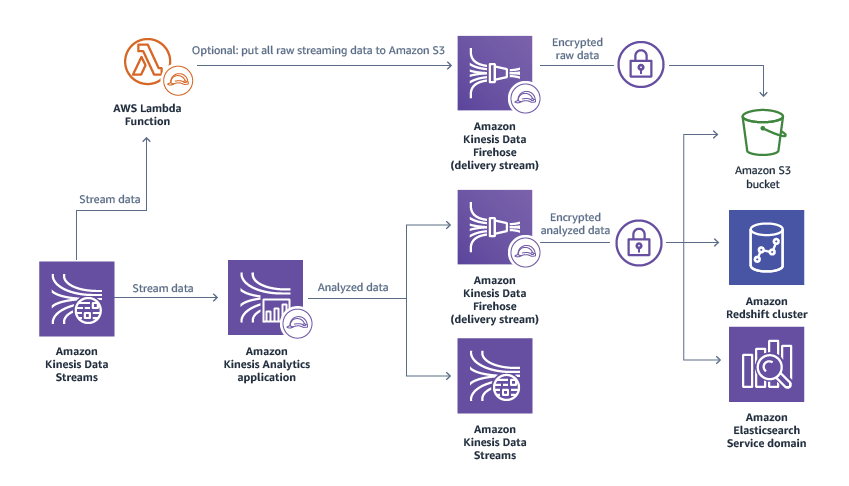
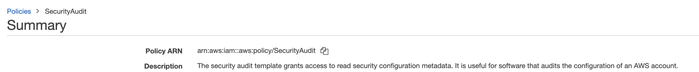
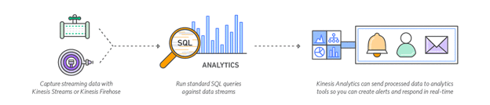

Test Report
Review questions
Jun 17, 2019 05:14AM EDT
 23 correct
23 correct 27 incorrect
27 incorrectYour answer
B. Send the tracking data to Amazon Kinesis Firehose. Use Amazon S3 notifications and AWS Lambda to prepare files in Amazon S3 with appropriate data for each supplier’s roles. Generate temporary AWS credentials for the suppliers’ users with AWS STS. Limit access to the appropriate files through security policies.
C. Send the tracking data to Amazon Kinesis Streams. Use Amazon EMR with Spark Streaming to store the data in HBase. Create one table per supplier. Use HBase Kerberos integration with the suppliers’ users. Use HBase ACL-based security to limit access for the roles to their specific table and columns.
D. Send the tracking data to Amazon Kinesis Firehose. Store the data in an Amazon Redshift cluster. Create views for the suppliers’ users and roles. Allow suppliers access to the Amazon Redshift cluster using a user limited to the applicable view.
Correct answer is A as DynamoDB can be used to store the data. Access to fields can be controlled using DynamoDB fine grained access control, which can be mapped to IAM role. This solution also requires the least amount of management effort.
Refer AWS documentation - DynamoDB Control Access
In DynamoDB, you have the option to specify conditions when granting permissions using an IAM policy (see Access Control). For example, you can:
- Grant permissions to allow users read-only access to certain items and attributes in a table or a secondary index.
- Grant permissions to allow users write-only access to certain attributes in a table, based upon the identity of that user.
Option B is wrong as S3 would not provide fine grained access control of data within the file.
Option C is wrong as although its possible, the option does not satisfy the least amount of management work requirement.
Option D is wrong as Redshift is more for a data warehouse solution and comes with management effort.
Points : 5 out of 5
Your answer
B. One table, with a primary key that is the concatenation of the sensor ID and timestamp
C. One table for each week, with a primary key that is the concatenation of the sensor ID and timestamp
D. One table for each week, with a primary key that is the sensor ID and a sort key that is the timestamp
Correct answer is D Composite key with Sensor ID and timestamp would help for faster queries
Refer AWS documentation for DynamoDB handling Timeseries data
Option C & D are valid as they are keeping tables for each week. However, with Option C, concatenation will cause queries would be slower
Table should be designed with a composite primary key consisting of Customer ID as the partition key and date/time as the sort key
Option A & B are wrong as One table would not make sense as we need to query only on past week and want data only for 4 weeks. This would impact performance. Also, provisioned throughput consumption is based on the size of the deleted item and its more costly as compared to dropping a table.
Your answer
B. Redshift
C. QuickSight
D. Elasticsearch
Correct answer is C as QuickSight provides visualization capability with integration with RDS, Redshift.
Refer AWS documentation - QuickSight
Amazon QuickSight is a fast, cloud-powered business intelligence service that makes it easy to deliver insights to everyone in your organization.
As a fully managed service, QuickSight lets you easily create and publish interactive dashboards that include ML Insights. Dashboards can then be accessed from any device, and embedded into your applications, portals, and websites.
QuickSight allows you to directly connect to and import data from a wide variety of cloud and on-premises data sources. These include SaaS applications such as Salesforce, Square, ServiceNow, Twitter, Github, and JIRA; 3rd party databases such as Teradata, MySQL, Postgres, and SQL Server; native AWS services such as Redshift, Athena, S3, RDS, and Aurora; and private VPC subnets. You can also upload a variety of file types including Excel, CSV, JSON, and Presto.
Option A is wrong as Hue is a Web interface for analyzing data with Hadoop.
Option B is wrong as Redshift is a fast, scalable data warehouse that makes it simple and cost-effective to analyze all your data across your data warehouse and data lake.
Option D is wrong as Elasticsearch is a fully managed service that makes it easy for you to deploy, secure, and operate Elasticsearch at scale with zero down time. It does not provide visualization support and needs to be used with Kibana and nor does it integrate with RDS, Redshift. The data needs to be loaded into Elasticsearch.
Your answer
B. Spark/Spark MLlib
C. Amazon Machine Learning
D. RDS MySQL
B. Spark/Spark MLlib
Correct answers are A & B
Option A as Mahout provides recommender engine/collaborative filtering capability
Option B as Spark's MLlib machine learning library should help with this task. Amazon ML is limited to 100 "categorical' recommendations, so a custom system is required for this purpose.
Option C is wrong as Amazon ML is limited to 100 "categorical' recommendations, so a custom system is required for this purpose.
Option D is wrong as RDS MySQL is just a database engine and does not provide analytics capability.
Your answer
B. Log critical events using the Kinesis Producer Library, and log informational events using the PutRecords API method.
C. Log critical events using the PutRecords API method, and log informational events using the Kinesis Producer Library.
D. Log all events using the PutRecords API method.
Correct answer is C as the core of this question is how to send event messages to Kinesis synchronously vs. asynchronously. The critical events must be sent synchronously, and the informational events can be sent asynchronously. The Kinesis Producer Library (KPL) implements an asynchronous send function, so it can be used for the informational messages. PutRecords is a synchronous send function, so it must be used for the critical events.
Refer AWS documentation - Developing Producers using KPL
Because the KPL may buffer records before sending them to Kinesis Data Streams, it does not force the caller application to block and wait for a confirmation that the record has arrived at the server before continuing execution. A call to put a record into the KPL always returns immediately and does not wait for the record to be sent or a response to be received from the server. Instead, a Future object is created that receives the result of sending the record to Kinesis Data Streams at a later time. This is the same behavior as asynchronous clients in the AWS SDK.
Option A is wrong as Kinesis Producer Library sends all events asynchronously
Option B is wrong as critical events needs to be synchronous and information events needs to be asynchronous.
Option D is wrong as PutRecords sends all events synchronously
Your answer
B. Regression
C. Binary
D. Cannot be done using Amazon Machine Learning
Correct answer is C as Binary classification can be used to predict for whether the transaction is fraudulent or not.
| Type of ML Problem | Description | Example |
|---|---|---|
| Classification | Pick one of N labels | Cat, dog, horse, or bear |
| Regression | Predict numerical values | Click-through rate |
| Clustering | Group similar examples | Most relevant documents (unsupervised) |
| Association rule learning | Infer likely association patterns in data | If you buy hamburger buns, you're likely to buy hamburgers (unsupervised) |
| Structured output | Create complex output | Natural language parse trees, image recognition bounding boxes |
| Ranking | Identify position on a scale or status | Search result ranking |
Your answer
B. Column chart
C. Pie chart
D. Scatter plot
Correct answer is C as Pie charts are best to use when you are trying to compare parts of a whole, which is ideal for the use case. They do not show changes over time.
Refer AWS documentation - QuickSight Chart Types
Option A is wrong as Line graphs are used to track changes over short and long periods of time.
Option B is wrong as Column chart is a data visualization where each category is represented by a rectangle, with the height of the rectangle being proportional to the values being plotted
Option D is wrong as Scatter plot is a two-dimensional data visualization that uses dots to represent the values obtained for two different variables - one plotted along the x-axis and the other plotted along the y-axis
Your answer
B. CloudWatch data showing consumed and provisioned write capacity when writes are being throttled
C. Application-level metrics showing the average item size and peak update rates for each attribute
D. The structure of any LSIs that have been defined on the table
E. The maximum historical WCU and RCU for the table
D. The structure of any LSIs that have been defined on the table
Correct answers are B & D as the key reason for throttling is hot keys, as the application does not consume the entire provisioned capacity.
Option B as CloudWatch helps shows the stats for consumed vs provisioned throughput capacity.
Option D as an LSI consumes WCU for writes on the primary table.
Refer AWS documentation - Throttled DB & DynamoDB LSI Considerations & DynamoDB CloudWatch
Partitions are usually throttled when they are accessed by your downstream applications much more frequently than other partitions (that is, a "hot" partition), or when workloads rely on short periods of time with high usage (a "burst" of read or write activity). To avoid hot partitions and throttling, you must optimize your table and partition structure.
Distribute your read operations and write operations as evenly as possible across your table. A "hot" partition can degrade the overall performance of your table.
Write Capacity Units - When an item in a table is added, updated, or deleted, updating the local secondary indexes will consume provisioned write capacity units for the table. The total provisioned throughput cost for a write is the sum of write capacity units consumed by writing to the table and those consumed by updating the local secondary indexes.
How can I determine how much of my provisioned throughput is being used? | You can monitor |
Option A is wrong as GSI does not impact primary table throughput capacity.
Option C is wrong as the provisioned capacity is not exceeded, the average would not be of much help.
Option E is wrong as the provisioned capacity is not exceeded the historical stats would not be of much help.
Your answer
B. Add interleaved sort keys per team.
C. Maintain team-specific copies of the table.
D. Add support for workload management queue hopping.
Correct answer is B as multiple teams query different columns with different queries it would be best to use Interleaved keys to improve performance. Interleaved keys are provided to help with the limitations of compound keys. They are designed to weigh each column in the key evenly, allowing improved performance regardless of which columns in the key you’re filtering.
Refer AWS documentation - Redshift Interleaved Sort Keys
An interleaved sort gives equal weight to each column, or subset of columns, in the sort key. If multiple queries use different columns for filters, then you can often improve performance for those queries by using an interleaved sort style. When a query uses restrictive predicates on secondary sort columns, interleaved sorting significantly improves query performance as compared to compound sorting.
Options A & C are wrong as they create duplicate copies or refer to the same underlying table and would not improve performance.
Option D is wrong as the key here is queries on same table as Amazon Redshift workload management (WLM) enables users to flexibly manage priorities within workloads so that short, fast-running queries won't get stuck in queues behind long-running queries.
AWS BDS-C00 Question feedbackYour answer
B. Use AWS KMS data key to run an UNLOAD ENCRYPTED command that stores the data in an unencrypted S3 bucket; run a COPY command to move the data into the target cluster.
C. Run an UNLOAD command that stores the data in an S3 bucket encrypted with an AWS KMS data key; run a COPY command to move the data into the target cluster.
D. Connect to the source cluster over an SSL client connection, and write data records to Amazon Kinesis Firehose to load into your target data warehouse.
Correct answer is B as the UNLOAD ENCRYPTED command automatically stores the data encrypted using-client side encryption and uses HTTPS to encrypt the data during the transfer to S3.
Refer AWS documentation - Redshift Unloading Data
UNLOAD automatically creates files using Amazon S3 server-side encryption with AWS-managed encryption keys (SSE-S3). You can also specify server-side encryption with an AWS Key Management Service key (SSE-KMS) or client-side encryption with a customer-managed key (CSE-CMK).
Option C is wrong because the data would not be encrypted in flight, and you cannot encrypt an entire bucket with a KMS key.
Options A & D are wrong as the most scalable solutions are the UNLOAD/COPY solutions because they will work in parallel.
Your answer
B. Ship the logs to Amazon CloudWatch Logs and use Amazon EMR to analyze the logs in a batch manner each hour.
C. Ship the logs to an Amazon Kinesis stream and have the consumers analyze the logs in a live manner.
D. Ship the logs to a large Amazon EC2 instance and analyze the logs in a live manner.
E. Store the logs locally on each instance and then have an Amazon Kinesis stream pull the logs for live analysis
Correct answer is C as the data can be ingested into the Kinesis streams using agents and the logs can then be analyzed real time.
Refer AWS documentation - Kinesis Serverless log Analytics
Amazon Kinesis Streams enables you to build custom applications that process or analyze streaming data for specialized needs. Amazon Kinesis Streams can continuously capture and store terabytes of data per hour from hundreds of thousands of sources such as website clickstreams, financial transactions, social media feeds, IT logs, and location-tracking events.
Option A & B are wrong as analyzing the logs every hour does not provide real time capability as required.
Option D is wrong as storing the logs on EC2 instance is not a scalable performant model
Option E is wrong as Amazon Kinesis stream work on the push mechanism, and the data from the EC2 instances need to be ingested into the Kinesis streams.
AWS BDS-C00 Question feedbackYour answer
B. Utilize Amazon Kinesis to collect the inbound sensor data, analyze the data with Kinesis clients and save the results to a Redshift cluster using EMR.
C. Utilize SQS to collect the inbound sensor data analyze the data from SQS with Amazon Kinesis and save the results to a Microsoft SQL Server RDS instance.
D. Utilize EMR to collect the inbound sensor data, analyze the data from EMR with Amazon Kinesis and save the results to DynamoDB.
Key point here to architect durable collection platform with real time analytics, data mining storage.
Correct answer is B to use Kinesis to capture the data in a elastic, durable and parallel manner. Analyze data with Kinesis clients and store data to Redshift for data mining using EMR.
Option A is wrong as S3 would not be ideal to capture data with that frequency and daily job will not provide real time analytics
Option C is wrong as SQS is not an ideal solution to capture this data and Kinesis clients are required to analyze the data. SQL server might not be a scalable option
Option D is wrong as EMR alone is not ideal to capture data and would need specific frameworks like Kafka to capture data for processing. Also real time analytics needs to done using Spark Streaming and not EMR alone. DynamoDB is not for data mining.
Your answer
B. Install Presto on the EMR cluster where Hive sits. Configure MySQL and PostgreSQL connector to select from different data sources in a single query.
C. Spin up an Elasticsearch cluster. Load data from all three data sources and use Kibana to analyze.
D. Write a program running on a separate EC2 instance to run queries to three different systems. Aggregate the results after getting the responses from all three systems.
Correct answer is B as Presto can help query over multiple datasources and also provides connectors to interact directly MySQL, Redshift and Hive.
Refer AWS documentation - EMR Presto
Presto is an open-source distributed SQL query engine optimized for low-latency, ad-hoc analysis of data. It supports the ANSI SQL standard, including complex queries, aggregations, joins, and window functions. Presto can process data from multiple data sources including the Hadoop Distributed File System (HDFS) and Amazon S3.
Option A is wrong as data is replicated and is not a cost effective solution.
Option C is wrong as Elasticsearch does not provide analytics capabilities.
Option D is wrong as running on EC2 instances is not a scalable and cost-effective solution.
Your answer
B. Line chart
C. Stacked area chart
D. Histogram
Correct answer is A as Bar Chart can be used to represent the data for comparison in sales for each region.
Refer AWS documentation - QuickSight Visual Types
Option B is wrong as Use line charts to compare changes in measure values over period of time
Option C is wrong as Stacked area chart is the extension of a basic area chart to display the evolution of the value of several groups on the same graphic.
Option D is wrong as Histograms are sometimes confused with bar charts. A histogram is used for continuous data, where the bins represent ranges of data, while a bar chart is a plot of categorical variables.
Points : 5 out of 5
Your answer
B. Redshift
C. Athena
D. EMR
Correct answer is B as Redshift is a fully managed data warehousing solution providing standard SQL interface and ability to run complex queries.
Refer AWS documentation - Redshift
Amazon Redshift is a fast, fully managed data warehouse that makes it simple and cost-effective to analyze all your data using standard SQL and your existing Business Intelligence (BI) tools. It allows you to run complex analytic queries against petabytes of structured data, using sophisticated query optimization, columnar storage on high-performance local disks, and massively parallel query execution.
Option A is wrong as SQS does not provide querying capability
Option C is wrong as Athena does not provide complex querying capability
Option D is wrong as EMR provides a managed Hadoop framework that makes it easy, fast, and cost-effective to process vast amounts of data across dynamically scalable Amazon EC2 instances.
AWS BDS-C00 Question feedbackYour answer
B. Enable versioning for the bucket
C. Ensure that access to the bucket is only given to one IAM role
D. Ensure that objects from the bucket are request only via HTTPS
D. Ensure that objects from the bucket are request only via HTTPS
Correct answers are A & D as one of the requirement is data security with encryption at rest and in transit. PCI DSS helps ensure that companies maintain a secure environment for storing, processing, and transmitting credit card information.
Option B is wrong as versioning only helps maintain data versions and are helpful to recover from accidental overwrites or deletions.
Option C is wrong as this is not a requirement and a best practice.
Your answer
B. Amazon DynamoDB and Amazon Elastic MapReduce with Spot instances.
C. Amazon RDS and Amazon Elastic MapReduce with Reserved instances.
D. Amazon DynamoDB and Amazon Elastic MapReduce with Reserved instances
Key point here is to optimize cost and performance only for the increased workload only, not the existing one
Refer EMR best practices - For unpredictable workloads, the suggested pricing model is Spot or On-Demand.
Correct answer is B and preferred over A as DynamoDB would be preferred over RDS for the throughput supported and Spot instances to reduce cost and handle the temporary workload.
Option C & D are wrong as Reserved instances would be preferred for a consistent and predictable workload and would prove costly in this scenario.
Your answer
B. Use Amazon S3 with server-side encryption, and run simulations on subsets in-memory on Amazon EC2.
C. Use HDFS on Amazon EMR, and run simulations on subsets in ephemeral drives on Amazon EC2.
D. Use HDFS on Amazon Elastic MapReduce (EMR), and run simulations on subsets in-memory on Amazon Elastic Compute Cloud (EC2).
E. Store the full data set in encrypted Amazon Elastic Block Store (EBS) volumes, and regularly capture snapshots that can be cloned to EC2 workstations
Correct answer is A as the S3 with SSE provides encryption at rest and HTTPS can be used to push data to S3 for encryption in transit. S3 provides an option for cost effective long term storage. Ephemeral drives would help run simulations and the data would lost once the EC2 instance is terminated.
Option B is wrong as S3 with SSE provides encryption at rest and HTTPS can be used to push data to S3 for encryption in transit. However, in memory simulations with 5 TB data would not be feasible.
Option C & D are wrong as HDFS is not an cost effective solution as data nodes would be required to store the data and it does not provide encryption by default.
Option E is wrong as EBS for long term storage is an expensive option.
AWS BDS-C00 Question feedbackPoints : 5 out of 5
Your answer
B. Create an Amazon DynamoDB table partitioned on the device and sorted on date, write log data to table. Execute the EMR job on the Amazon DynamoDB table.
C. Create an Amazon S3 bucket and write data into folders by day. Execute the EMR job on the daily folder.
D. Create an Amazon DynamoDB table partitioned on EventID, write log data to table. Execute the EMR job on the table.
Correct answer is C as the EMR jobs needs to process daily data, it would be best to partition the data by day.
Refer AWS documentation - EMR Best Practices
Data partitioning is an essential optimization to your data processing workflow. Without any data partitioning in place, your data processing job needs to read or scan all available data sets and apply additional filters in order to skip unnecessary data. Such architecture might work for a low volume of data, but scanning the entire data set is a very time consuming and expensive approach for larger data sets. Data partitioning lets you create unique buckets of data and eliminate the need for a data processing job to read the entire data set.
Three considerations determine how you partition your data:
- Data type (time series)
- Data processing frequency (per hour, per day, etc.)
- Data access and query pattern (query on time vs. query on geo location)
For instance, if you are processing a time-series data set where you need to process your data once every hour and your data-access pattern is based on time, partitioning your data based on date makes the most sense. An example of such data processing would be processing your daily logs. If you have incoming logs from variety of data sources (web servers, devices etc.), then creating partitions of data based on the hour of the day gives you a date-based partitioning scheme.
The structure of such partitioning scheme will look similar to the following:
/data/logs/YYYY-MM-DD-HH/logfiles for this given hour, where YYYY-MM-DD-HH changes based on the current log ingest time.
Option A is wrong as the data needs to be processed by day, it would be best to partition the data by date instead of device id.
Options B & D are wrong as DynamoDB is not an ideal solution for storage and archival of logs data and does not provide easy integration with EMR.
Your answer
B. Using Adaptive Capacity
C. Design Partition Keys to distribute workload evenly
D. Using Write Sharding to distribute Workloads Evenly
Correct answer is A as DynamoDB burst capacity can retain part of unused provisioned capacity, upto 5 minutes, allowing application to burst.
Refer AWS documentation - DynamoDB Best Practices
DynamoDB provides some flexibility in your per-partition throughput provisioning by providing burst capacity, as follows. Whenever you are not fully using a partition's throughput, DynamoDB reserves a portion of that unused capacity for later bursts of throughput to handle usage spikes.
DynamoDB currently retains up to five minutes (300 seconds) of unused read and write capacity. During an occasional burst of read or write activity, these extra capacity units can be consumed quickly—even faster than the per-second provisioned throughput capacity that you've defined for your table.
DynamoDB can also consume burst capacity for background maintenance and other tasks without prior notice.
Option B is wrong as Adaptive Capacity enables your application to continue reading and writing to hot partitions without being throttled, provided that traffic does not exceed your table’s total provisioned capacity or the partition maximum capacity.
Option C is wrong as the partition keys are designed fine, as the application does not consume its total capacity and is not throttled.
Option D is wrong as Write sharding only allows for writes.
Points : 5 out of 5
Your answer
B. Write images and metadata to Amazon Kinesis. Use a Kinesis Client Library (KCL) application to run the image processing and save the image output to Amazon S3 and metadata to the app repository DB.
C. Write image and metadata to Amazon Kinesis. Use Amazon Elastic MapReduce (EMR) with Spark Streaming to run image processing and save the images output to Amazon S3 and metadata to app repository DB.
D. Upload image with metadata to Amazon S3, use Lambda function to run the image processing and save the images output to Amazon S3 and metadata to the app repository DB.
Correct answer is D as the images with metadata can be uploaded to S3. S3 can support both the size and request rate. A Lambda function can be triggered to convert and same the images output back to S3 and metadata to app DB.
Option A is wrong as RDS is not an ideal storage for images as well as handle hundreds of uploads per second.
Options B & C are wrong as Kinesis support max message size of 1MB per record and would not be able to support 10MB of image files.
Your answer
B. Regression model with a numeric target attribute.
C. Binary Classification with a categorical target attribute.
D. K-Nearest Neighbors model with a multi-class target attribute.
Correct answer is A as the blood group types are limited, a multi-class classification model can help classification the result into the blood groups
Option B is wrong as regression is for predictive modelling
Option C is wrong as Binary classification can only classify a yes or no.
Option D is wrong as K-Nearest Neighbours is more for grouping unknown data.
Points : 5 out of 5
Your answer
B. Send the log data to an Amazon SQS standard queue. Make the queue an event source for an AWS Lambda function that transforms the data and stores it in Amazon Redshift. Query the data in Amazon Redshift.
C. Send the log data to an Amazon CloudWatch Logs log group. Make the log group an event source for an AWS Lambda function that transforms the data and stores it in an Amazon S3 bucket. Query the data with Amazon Athena.
D. Send the log data to an Amazon Kinesis data stream. Subscribe an AWS Lambda function to the stream that transforms the data and sends it to a second data stream. Use Amazon Kinesis Data Analytics to query the data in the second stream.
Correct answer is D as the data can be captured using Kinesis Data Stream and Kinesis Data Analytics can be used to query on the streaming data using time or window queries to generate trend analysis.
Refer AWS documentation - Streaming Analytics Pipeline
Many Amazon Web Services (AWS) customers use streaming data to gain real-time insight into customer activity and immediate business trends. Streaming data, which is generated continuously from thousands of data sources, includes a wide variety of data such as log files from your mobile or web applications, e-commerce purchases, in-game player activity, information from social networks, financial trading floors, or geospatial services, and telemetry from connected devices. This data can help companies make well-informed decisions and proactively respond to changing business conditions.
Amazon Kinesis, a platform for streaming data on AWS, offers powerful services that make it easier to build data processing applications, load massive volumes of streaming data, and analyze it in real time.

Options A, B & C are wrong as they do not provide analytics on streaming data.
AWS BDS-C00 Question feedbackYour answer
B. Load the unstructured data into Redshift, and use string parsing functions to extract structured data for inserting into the analysis schema.
C. When the data is saved to Amazon S3, use S3 Event Notifications and AWS Lambda to transform the file contents. Insert the data into the analysis schema on Redshift.
D. Normalize the data using an AWS Marketplace ETL tool, persist the results to Amazon S3, and use AWS Lambda to INSERT the data into Redshift.
Correct answer is A as the data volume is large, it can be processed using EMR to generate structured CSV data and then load the data into Redshift.
Refer AWS documentation - Data Warehousing on AWS
Data in Amazon Redshift must be structured by a defined schema. Amazon Redshift doesn’t support an arbitrary schema structure for each row. If your data is unstructured, you can perform extract, transform, and load (ETL) on Amazon EMR to get the data ready for loading into Amazon Redshift. For JSON data, you can store key value pairs and use the native JSON functions in your queries.
Option B is wrong as unstructured data cannot be loaded into Redshift.
Option C is wrong as Lambda would not be able to handle large amounts of data due to its limitation.
Option D is wrong as market ETL tool is not needed and EMR can be used.
Points : 5 out of 5
Your answer
B. AWS Data Pipeline
C. Amazon AppStream
D. Amazon Simple Queue Service
Key point here is address real time data ingestion.
Correct answer is A
Amazon Kinesis is a platform for streaming data on AWS, making it easy to load and analyze streaming data, and also providing the ability for you to build custom streaming data applications for specialized needs.
- Use Amazon Kinesis Streams to collect and process large streams of data records in real time.
- Use Amazon Kinesis Firehose to deliver real-time streaming data to destinations such as Amazon S3 and Amazon Redshift.
- Use Amazon Kinesis Analytics to process and analyze streaming data with standard SQL.
Option B is wrong as Data Pipeline is more of an orchestration service and just helps move data between different data stores.
Option C is wrong as Amazon AppStream is an application streaming service that lets you stream your existing resource-intensive applications from the cloud without code modifications.
Option D is wrong as SQS would not be able to handle large scale real time ingestion.
AWS BDS-C00 Question feedbackPoints : 5 out of 5
Your answer
B. Add a caching layer in front of the web application with ElastiCache Memcached, or Redis.
C. DynamoDB is not a good solution for this use case. Instead, create a data pipeline to move data from DynamoDB to Amazon RDS, which is more suitable for this.
D. Double the number of Read and Write Capacity Units. The DynamoDB table is being throttled when customers from the same company all use the table at the same time.
Correct answer is A as a single company is facing the issue and it would be a hot key issue cause of the primary key being Company ID. Data Pipeline can be used to migrate the data.
Option B is wrong as Elasticache may be reduce the load depending upon the queries.
Option C is wrong as RDS would not be able to handle the huge amount of data.
Option D is wrong as this is not a cost-effective solution.
Points : 5 out of 5
Your answer
B. RDS MySQL
C. HBase on HDFS
D. Hadoop with Spark
Correct answer is C as HBase on HDFS provide the ability the store the large amount of data in a non-relational key-value format.
Refer AWS documentation - EMR HBase
HBase is an open source, non-relational, distributed database developed as part of the Apache Software Foundation's Hadoop project. HBase runs on top of Hadoop Distributed File System (HDFS) to provide non-relational database capabilities for the Hadoop ecosystem.
HBase works seamlessly with Hadoop, sharing its file system and serving as a direct input and output to the MapReduce framework and execution engine. HBase also integrates with Apache Hive, enabling SQL-like queries over HBase tables, joins with Hive-based tables, and support for Java Database Connectivity (JDBC).
Option B is wrong as RDS would not support huge amount of data and is a relational database.
Options A & D is wrong as they do not provide key-value storage format.
Your answer
B. Copy files to Amazon S3 Standard Storage.
C. Write file contents to Amazon ElastiCache.
D. Copy files to Amazon S3 infrequent Access Storage.
Correct answer is A as the provisioned throughput required for DynamoDB would be most cost efficient as compared to the PUT requests for S3.
DynamoDB Calculation vs S3 Calculation (Considering 31 days)
Option C is wrong as ElastiCache is not ideal storage, but its more ideal for caching
Options B & D are wrong as PUT operations on S3 for small files would be expensive as compared to DynamoDB inserts.
AWS BDS-C00 Question feedbackPoints : 5 out of 5
Your answer
B. Use the AWS CloudHSM service to establish a trust relationship between the CloudHSM and the corporate HSM over a Direct Connect connection. Configure Amazon Redshift to use the CloudHSM device.
C. Configure the AWS Key Management Service to point to the corporate HSM device, and then launch the Amazon Redshift cluster with the KMS managing the encryption keys.
D. Use AWS Import/Export to import the corporate HSM device into the AWS Region where the Amazon Redshift cluster will launch, and configure Redshift to use the imported HSM.
Correct answer is A as Amazon Redshift can use an on-premises HSM for key management over the VPN, which ensures that the encryption keys are locally managed.
Option B is wrong as although it is possible as CloudHSM can cluster to an on-premises HSM. But then key management could be performed on either the on-premises HSM or CloudHSM, and that doesn’t meet the design goal.
Option C is wrong as does not describe a valid feature of KMS and violates the requirement for the corporate HSM to manage the keys requirement, even if it were possible.
Option D is wrong as it is not possible because you cannot put hardware into an AWS Region.
Points : 5 out of 5
Your answer
B. Kinesis Firehose
C. SNS
D. SQS
Correct answer is A as Kinesis Data Streams allows the ability for replaying the data as well access to the same data to multiple Kinesis client applications.
Refer AWS documentation - Kinesis Data Streams FAQ
Amazon Kinesis Data Streams enables you to build custom applications that process or analyze streaming data for specialized needs. You can continuously add various types of data such as clickstreams, application logs, and social media to an Amazon Kinesis data stream from hundreds of thousands of sources. Within seconds, the data will be available for your Amazon Kinesis Applications to read and process from the stream.
Amazon Kinesis Data Streams enables real-time processing of streaming big data. It provides ordering of records, as well as the ability to read and/or replay records in the same order to multiple Amazon Kinesis Applications. The Amazon Kinesis Client Library (KCL) delivers all records for a given partition key to the same record processor, making it easier to build multiple applications reading from the same Amazon Kinesis data stream (for example, to perform counting, aggregation, and filtering).
Amazon Simple Queue Service (Amazon SQS) offers a reliable, highly scalable hosted queue for storing messages as they travel between computers. Amazon SQS lets you easily move data between distributed application components and helps you build applications in which messages are processed independently (with message-level ack/fail semantics), such as automated workflows.
Option B is wrong as Kinesis Firehose only allows data transfer to S3, Redshift. It does not provide the replay capability or buffering of messages
Option C is wrong as SNS can provide the message to multiple subscribers, however it cannot replay the data.
Option D is wrong SQS does not provide the ability to replay or access to multiple consumer.
AWS BDS-C00 Question feedbackPoints : 5 out of 5
Your answer
B. Use an Amazon Relational Database Service (RDS) instance sized to meet the maximum anticipated transaction rate and with the High Availability option enabled.
C. Deploy a NoSQL data store on top of an Amazon Elastic MapReduce (EMR) cluster, and select the HDFS High Durability option.
D. Use Amazon Redshift with synchronous replication to Amazon Simple Storage Service (S3) and row-level locking for strong consistency.
Correct answer is A as DynamoDB can store and handle the transactions. DynamoDB also supports strongly consistent reads. DynamoDB is also a managed AWS service.
Amazon DynamoDB is a key-value and document database that delivers single-digit millisecond performance at any scale. It's a fully managed, multiregion, multimaster database with built-in security, backup and restore, and in-memory caching for internet-scale applications. DynamoDB can handle more than 10 trillion requests per day and support peaks of more than 20 million requests per second.
Option B is wrong as RDS does not meet the storage and request handling rate.
Option C is wrong as NoSQL datastore would need resources and handling. Also, EMR HDFS option is not a cost-effective option.
Option D is wrong ad Redshift is a data warehouse solution and not ideal to handle high frequency data collection.
AWS BDS-C00 Question feedbackPoints : 5 out of 5
Your answer
B. Provide the auditor with SSH keys for access to the Amazon EMR cluster.
C. Provide the auditor with CloudFormation templates.
D. Provide the auditor with access to AWS DirectConnect to use their existing tools.
Correct answer is A as the SecurityAudit managed policy can provide the Auditors with the read only access to AWS Services.

Option B is wrong as providing SSH keys is not a good practice.
Option C is wrong as it does not mention the Cluster was setup using CloudFormation. Also, CloudFormation templates may not give the actual picture of whats deployed.
Option D is wrong as Direct Connect does not provide access to tools and it is still control using IAM.
Points : 5 out of 5
Your answer
B. You cannot send Kinesis data to the same bucket on consecutive days if you do not have versioning enabled on the bucket. If you don't have versioning enabled you would need to define 3 different buckets or else the data is overwritten each day
C. Data records are only accessible for a default of 24 hours from the time they are added to a stream.
D. A sensor probably stopped working on the second day. If one sensor fails, no data is sent to the stream until that sensor is fixed
Correct answer is C as by default, Kinesis stores the records for 24 hours only.
Refer AWS documentation - Kinesis FAQs
By default, Records of a stream are accessible for up to 24 hours from the time they are added to the stream. You can raise this limit to up to 7 days by enabling extended data retention.
Your answer
B. Optimize by deploying a combination of on-demand, RI and spot-pricing models for the master, core and task nodes. Store ingest and output files in Amazon S3 with a lifecycle policy that archives them to Amazon Glacier.
C. Store the ingest files in Amazon S3 RRS and store the output files in S3. Deploy Reserved Instances for the master and core nodes and on-demand for the task nodes.
D. Deploy on-demand master, core and task nodes and store ingest and output files in Amazon S3 RRS
Key point here is to save most money while being able to process the huge data.
Correct answer is A as it follows best practice of using On demand for master and core and spot for task nodes also help reduce cost using spot instances.
Refer AWS documentation - EMR Instances
Option B is wrong as RI will make it expensive as there is no consistent requirement
Option C is wrong as RI will make it expensive as there is no consistent requirement.
Option D is wrong as input should be in S3 standard, as re-ingesting the input data might end up being more costly then holding the data for limited time in standard S3
AWS BDS-C00 Question feedbackPoints : 5 out of 5
Your answer
B. Create bucket policies that only allow access to the authorized prefixes based on the users' group name in Active Directory.
C. Deploy the AD Synchronization service to create AWS IAM users and groups based on AD information.
D. Use Amazon S3 API integration with AD to impersonate the users on access in a transparent manner.
Correct answer is A as Identity Federation allows organizations to associate temporary credentials to users authenticated through an external identity provider such as Microsoft Active Directory (AD). These temporary credentials are linked to AWS IAM roles that grant access to the S3 bucket.
Refer AWS documentation - S3 Cross Account Access (Role to S3 Bucket with Prefix access can be configured similarly)
Option B is wrong as it does not work because bucket policies are linked to IAM principles and cannot recognize AD attributes.
Option C is wrong as it does not work because AD Synchronization will not sync directly with AWS IAM, and custom synchronization would not result in Amazon S3 being able to see group information.
Option D is wrong as it isn't possible because there is no feature to integrate Amazon S3 directly with external identity providers.
Correct answer is B as NOLOAD checks the integrity of all of the data without loading it into the database. The NOLOAD option displays any errors that would occur if you had attempted to load the data. All other options will require subsequent processing on the cluster which will consume resources.
Refer AWS documentation - Data Load Copy Parameters
If you want to validate your data without actually loading the table, use the NOLOAD option with the COPY command.
Points : 5 out of 5
Your answer
B. Bootstrap action to change the Hive Metastore to an Amazon RDS database
C. s3distcp with the output Manifest option to generate RDS DDL
D. Naming scheme support with automatic partition discovery from Amazon S3
Correct answer is A as EMRFS consistent view using a DynamoDB table can be implemented using a separate common DynamoDB table.
Refer AWS documentation - EMRFS Metadata
EMRFS consistent view tracks consistency using a DynamoDB table to track objects in Amazon S3 that have been synced with or created by EMRFS. The metadata is used to track all operations (read, write, update, and copy), and no actual content is stored in it. This metadata is used to validate whether the objects or metadata received from Amazon S3 matches what is expected. This confirmation gives EMRFS the ability to check list consistency and read-after-write consistency for new objects EMRFS writes to Amazon S3 or objects synced with EMRFS. Multiple clusters can share the same metadata.
Points : 5 out of 5
Your answer
B. Use SQS for storing the transaction messages; when the billing batch process performs first and consumes the message, write the code in a way that does not remove the message after consumed, so it is available for the audit application several hours later. The audit application can consume the SQS message and remove it from the queue when completed.
C. Store the transaction information in a DynamoDB table. The billing application can read the rows while the audit application will read the rows them remove the data.
D. Use Kinesis to store the transaction information. The billing application will consume data from the stream, the audit application can consume the same data several hours later.
Correct answer is D as the key point here is batch application and message being stored durably and delivery guarantee. Kinesis can store the data durably and allow access to multiple consumers without any dependencies.
Refer AWS documentation - Kinesis Data Streams
Q: How does Amazon Kinesis Data Streams differ from Amazon SQS?
Amazon Kinesis Data Streams enables real-time processing of streaming big data. It provides ordering of records, as well as the ability to read and/or replay records in the same order to multiple Amazon Kinesis Applications. The Amazon Kinesis Client Library (KCL) delivers all records for a given partition key to the same record processor, making it easier to build multiple applications reading from the same Amazon Kinesis data stream (for example, to perform counting, aggregation, and filtering).
Amazon Simple Queue Service (Amazon SQS) offers a reliable, highly scalable hosted queue for storing messages as they travel between computers. Amazon SQS lets you easily move data between distributed application components and helps you build applications in which messages are processed independently (with message-level ack/fail semantics), such as automated workflows.
Q: When should I use Amazon Kinesis Data Streams, and when should I use Amazon SQS?
We recommend Amazon Kinesis Data Streams for use cases with requirements that are similar to the following:
- Routing related records to the same record processor (as in streaming MapReduce). For example, counting and aggregation are simpler when all records for a given key are routed to the same record processor.
- Ordering of records. For example, you want to transfer log data from the application host to the processing/archival host while maintaining the order of log statements.
- Ability for multiple applications to consume the same stream concurrently. For example, you have one application that updates a real-time dashboard and another that archives data to Amazon Redshift. You want both applications to consume data from the same stream concurrently and independently.
- Ability to consume records in the same order a few hours later. For example, you have a billing application and an audit application that runs a few hours behind the billing application. Because Amazon Kinesis Data Streams stores data for up to 7 days, you can run the audit application up to 7 days behind the billing application.
We recommend Amazon SQS for use cases with requirements that are similar to the following:
- Messaging semantics (such as message-level ack/fail) and visibility timeout. For example, you have a queue of work items and want to track the successful completion of each item independently. Amazon SQS tracks the ack/fail, so the application does not have to maintain a persistent checkpoint/cursor. Amazon SQS will delete acked messages and redeliver failed messages after a configured visibility timeout.
- Individual message delay. For example, you have a job queue and need to schedule individual jobs with a delay. With Amazon SQS, you can configure individual messages to have a delay of up to 15 minutes.
- Dynamically increasing concurrency/throughput at read time. For example, you have a work queue and want to add more readers until the backlog is cleared. With Amazon Kinesis Data Streams, you can scale up to a sufficient number of shards (note, however, that you'll need to provision enough shards ahead of time).
- Leveraging Amazon SQS’s ability to scale transparently. For example, you buffer requests and the load changes as a result of occasional load spikes or the natural growth of your business. Because each buffered request can be processed independently, Amazon SQS can scale transparently to handle the load without any provisioning instructions from you.
Option A is wrong as SQS chaining would create dependency among the consumers. If one consumer fails, the message would not be available for the other consumer impacting the availability.
Option B is wrong as although possible is error prone and needs to maintain the position read by the application.
Option C is wrong as with DynamoDB delivery guarantee needs to handled by application as well is not a cost effective solution.
Your answer
B. A video transcoding pipeline running on EC2 using SQS to distribute tasks and Auto Scaling to adjust the number or nodes depending on the length of the queue S3 to host videos with Lifecycle Management to archive all files to Glacier after a few days CloudFront to serve HLS transcoding videos from Glacier
C. Elastic Transcoder to transcode original high-resolution MP4 videos to HLS EBS volumes to host videos and EBS snapshots to incrementally backup original rues after a few days. CloudFront to serve HLS transcoded videos from EC2.
D. A video transcoding pipeline running on EC2 using SQS to distribute tasks and Auto Scaling to adjust the number of nodes depending on the length of the queue. EBS volumes to host videos and EBS snapshots to incrementally backup original files after a few days. CloudFront to serve HLS transcoded videos from EC2
Key here the cost efficient solution with company needing video transcoding expertise and needing to hire a consultant with global distribution.
Correct answer is A as Elastic Transcoder provides and out of box option to transcode videos into any format without any expertise. S3 to host videos and CloudFront to serve HLS transcoded videos for global distribution while being cost efficient
Option B & D are wrong as a video transcoding pipeline with instances would increase the cost needing expertise as well as infrastructure
Option C & D are wrong as EBS volumes to host data with snapshots would increase the cost.
Points : 5 out of 5
Your answer
B. Binary
C. Regression
D. Unsupervised
Correct answer is C as Supervised learning using Regression can help build a model to predict rain based on the historical data.
Refer documentation - Machine Learning
| Type of ML Problem | Description | Example |
|---|---|---|
| Classification | Pick one of N labels | Cat, dog, horse, or bear |
| Regression | Predict numerical values | Click-through rate |
| Clustering | Group similar examples | Most relevant documents (unsupervised) |
| Association rule learning | Infer likely association patterns in data | If you buy hamburger buns, you're likely to buy hamburgers (unsupervised) |
| Structured output | Create complex output | Natural language parse trees, image recognition bounding boxes |
| Ranking | Identify position on a scale or status | Search result ranking |
Your answer
B. Apache Hue
C. Jupyter Notebook
D. Apache Presto
Correct answer is C as Jupyter Notebook is an open-source web application that you can use to create and share documents that contain live code, equations, visualizations, and narrative text
Option A is wrong as Hive is an open-source, data warehouse, and analytic package that runs on top of a Hadoop cluster.
Option B is wrong as Apache Hue is an open-source, web-based, graphical user interface for use with Amazon EMR and Apache Hadoop. It does not provide live code and sharing of documents.
Option D is wrong as Presto is a fast SQL query engine designed for interactive analytic queries over large datasets from multiple sources
Your answer
B. Write them to a file on Amazon Simple Storage Service (S3). Write an AWS Lambda function that runs in response to the S3 event to load the events into Amazon Elasticsearch Service for analysis.
C. Write them to the local disk and configure the Amazon CloudWatch Logs agent to load the data into CloudWatch Logs and subsequently into Amazon Elasticsearch Service.
D. Write them to CloudWatch Logs and use an AWS Lambda function to load them into HDFS on an Amazon Elastic MapReduce (EMR) cluster for analysis.
Correct answer is A as the simplest would be to use Firehose to stream data to collect the logs and load the data to Redshift for analysis.
Refer AWS documentation - Kinesis Data Firehose
Amazon Kinesis Data Firehose is the easiest way to reliably load streaming data into data stores and analytics tools. It can capture, transform, and load streaming data into Amazon S3, Amazon Redshift, Amazon Elasticsearch Service, and Splunk, enabling near real-time analytics with existing business intelligence tools and dashboards you’re already using today. It is a fully managed service that automatically scales to match the throughput of your data and requires no ongoing administration. It can also batch, compress, transform, and encrypt the data before loading it, minimizing the amount of storage used at the destination and increasing security.
Option B is wrong the logs file cannot be written to S3 directly and would need an agent like CloudWatch for Kinesis. Also you would need to develop the Lambda function to track events and load data to Elasticsearch
Option C is wrong as local disk would not provide the durability and might lead to data loss if the instance goes down.
Option D is wrong as the Lambda functions needs to be developed. Also, loading the data to HDFS using lambda might not seamless and would need AWS Data Pipeline.
Points : 5 out of 5
Your answer
B. Store the data points in an Amazon DynamoDB table and poll if for peak metrics data from an Amazon EC2 application.
C. Create an Amazon Machine Learning model and invoke it with AWS Lambda.
D. Use Amazon Kinesis Streams and a KCL-based application deployed on AWS Elastic Beanstalk.
Correct answer is A as IoT rules can help evaluate and send notifications when the peak thresholds are exceeded. The AWS IoT rules engine listens for incoming MQTT messages that match a rule. When a matching message is received, the rule takes some action with the data in the MQTT message (for example, writing data to an Amazon S3 bucket, invoking a Lambda function, or sending a message to an Amazon SNS topic).
Refer AWS documentation - IoT Rules
Rules give your devices the ability to interact with AWS services. Rules are analyzed and actions are performed based on the MQTT topic stream. You can use rules to support tasks like these:
- Augment or filter data received from a device.
- Write data received from a device to an Amazon DynamoDB database.
- Save a file to Amazon S3.
- Send a push notification to all users using Amazon SNS.
- Publish data to an Amazon SQS queue.
- Invoke a Lambda function to extract data.
- Process messages from a large number of devices using Amazon Kinesis.
- Send data to the Amazon Elasticsearch Service.
- Capture a CloudWatch metric.
- Change a CloudWatch alarm.
- Send the data from an MQTT message to Amazon Machine Learning to make predictions based on an Amazon ML model.
- Send a message to a Salesforce IoT Input Stream.
- Send message data to an AWS IoT Analytics channel.
- Start execution of a Step Functions state machine.
- Send message data to an AWS IoT Events input.
Options B, C & D are wrong as they are not cost-effective and need additional development or involve other services.
Points : 5 out of 5
Your answer
B. Kafka
C. Kinesis Firehose to S3 and Athena
D. Spark Streaming with SparkSQL and MLlib
Correct answer is A as Kinesis Data Streams with Kinesis Data Analytics can provide real time analytics only data while using managed services
Refer AWS documentation - Kinesis Data Analytics

Amazon Kinesis Data Analytics is the easiest way to analyze streaming data, gain actionable insights, and respond to your business and customer needs in real time. Amazon Kinesis Data Analytics reduces the complexity of building, managing, and integrating streaming applications with other AWS services. SQL users can easily query streaming data or build entire streaming applications using templates and an interactive SQL editor. Java developers can quickly build sophisticated streaming applications using open source Java libraries and AWS integrations to transform and analyze data in real-time.
Amazon Kinesis Data Analytics takes care of everything required to run your real-time applications continuously and scales automatically to match the volume and throughput of your incoming data.
Option B is wrong as Kafka needs to be managed and does not provide analytical capability
Option C is wrong as Athena does not work on the streaming analytics. It is more for batch analytics
Option D is wrong as Spark Streaming and MLlib would need EMR cluster management and development.
AWS BDS-C00 Question feedbackPoints : 5 out of 5
Your answer
B. Use the Amazon Redshift COPY command to move the data from Amazon S3 into Redshift and perform a SQL query that outputs the most popular bicycle stations.
C. Persist the data on Amazon S3 and use a transient EMR cluster with spot instances to run a Spark streaming job that will move the data into Amazon Kinesis.
D. Keep the data on Amazon S3 and use an Amazon EMR-based Hadoop cluster with spot instances to run a Spark job that performs a stochastic gradient descent optimization over EMRFS.
Correct answer is D as the data is already hosted in S3, EMR with EMRFS can be used to perform analysis.
Option A is wrong EBS backed volumes cannot handled the data capacity
Option B is wrong as copying the data in Redshift would duplicate it and current size limitation of Redshift is 2PB.
Option C is wrong as the answer is incomplete as it does not provide any analysis option.
Your answer
B. Use bzip2 or Snappy rather than gzip for the archives.
C. Decompress the gzip archives and store the data as CSV files.
D. Use Avro rather than gzip for the archives.
Correct answer is B as gzip is not ideal compression for files larger than 1GB and compression technique should be checked with supports splitting like bzip2 or one with higher compression handling like Snappy.
Refer AWS documentation - EMR Best Practices
Depending on how large your aggregated data files are, the compression algorithm becomes an important choice. For instance, if you are aggregating your data (using the ingest tool of your choice) and the aggregated data files are between 500 MB to 1 GB, GZIP compression is an acceptable data compression type. However, if your data aggregation creates files larger than 1 GB, its best to pick a compression algorithm that supports splitting.
What Compression Algorithm Should I Use?
Naturally, not all compression algorithms are alike. Consider these potential advantages and disadvantages:
As the table below suggests, some compression algorithms are faster. You need to understand your workload in order to decide if faster compressions are any use for you. For example, if your job is CPU bounded, faster compression algorithms may not give you enough performance improvement. If you decide compression speed is important, Snappy compression seems to perform faster.
Some compressions algorithms are slower but offer better space savings, which may be important to you. However, if storage cost is not an important factor, you may want a faster algorithm instead.
Importantly, some algorithms allow file output to be split. As discussed earlier, the ability to split your data file affects how you store your data files. If the compression algorithm does not support splitting, you may have to maintain smaller file sizes. However, if your compressed files can be chunked, you may want to store large files for Amazon EMR processing.
AWS BDS-C00 Question feedbackYour answer
B. Machine Learning on R instance types and ad-hoc queries on G2 instance types
C. Machine Learning on T instance types and ad-hoc queries on M instance types
D. Machine Learning on D instance types and ad-hoc queries on I instance types
Correct answer is A as machine learning are usually compute intensive and adhoc queries are suited for memory optimized.
Refer AWS documentation - EMR Best Practices
For memory-intensive applications, prefer R type instances over the other instance types. For compute-intensive applications, prefer C type instances. For applications balanced between memory and compute, prefer M type general-purpose instances.
Compute Optimized - High performance web servers, scientific modelling, batch processing, distributed analytics, high-performance computing (HPC), machine/deep learning inference, ad serving, highly scalable multiplayer gaming, and video encoding.
Memory Optimized - Instances are well suited for memory intensive applications such as high performance databases, distributed web scale in-memory caches, mid-size in-memory databases, real time big data analytics, and other enterprise applications.
Option B is wrong as G2 is GPU powered and GPU-powered G2 instance family is home to molecular modeling, rendering, machine learning, game streaming, and transcoding jobs that require massive amounts of parallel processing power.
Option C is wrong as T are ideally suited for general purpose applications.
Option D is wrong as I & D are storage optimized instances.
AWS BDS-C00 Question feedbackPoints : 5 out of 5
Your answer
B. Change the input split size in the MapReduce job configuration.
C. Use a bootstrap action to present the S3 bucket as a local filesystem.
D. Launch the core nodes and task nodes within an Amazon Virtual Cloud.
E. Adjust the number of simultaneous mapper tasks.
F. Enable termination protection for the job flow.
E. Adjust the number of simultaneous mapper tasks.
Correct answer is B & E as the key point here is to reduce job completion time.
Option B as the split size of the match in memory block size of task and HDFS files will help to complete the job faster.
Option E as adjusting and tuning the number of simultaneous mapper task would help reduce time
Refer to EMR Best Practices
Option A is wrong as Spot instances would help reduce cost but might increase the job completion time
Option C is wrong as it would not help as the data is already there in the data nodes.
Option D is wrong as the instances would be in VPC already and would not improve job times
Option F is wrong as termination protection would not help as the instances are not being terminated adhoc
Your answer
B. Generate a graph using MicroStrategy backed by a transient EMR cluster.
C. Implement a Jupyter front-end provided by a continuously running EMR cluster leveraging spot instances for task nodes.
D. Implement a Zeppelin application that runs on a long-running EMR cluster.
Correct answer is A as the most cost effective solution is to use a transient cluster to create the stats and use S3 to host the same.
Option B is wrong as using MicroStrategy is an overhead and its a marketplace product, which would not be a cost effective solution.
Options C & D are wrong as using a long running or continuous cluster is not cost effective
Points : 5 out of 5
Your answer
B. Kinesis Firehose + Redshift
C. EMR using Hive
D. EMR running Apache Spark
Key point is perform ad-hoc analytics with data at high velocity
Correct answer is B as Kinesis Firehose provides a managed service for aggregating streaming data and inserting it into RedShift. RedShift also supports ad-hoc queries over well-structured data using a SQL-compliant wire protocol, so the business team should be able to adopt this system easily.
Option A is wrong as RDS would not be suitable for ad-hoc analytics
Option C & D are wrong as EMR does not itself handle data at high velocity. Need Kafka or similar frameworks
Your answer
B. Feed the data into Spark Mlib and build a random forest model.
C. Feed the data into Apache Mahout and build a multi-classification model.
D. Feed the data into Amazon Machine Learning and build a binary classification model.
Correct answer is A as Regression model can help predict or forecast data based on the earlier dataset.
Regression predictive modeling is the task of approximating a mapping function (f) from input variables (X) to a continuous output variable (y).
Option B is wrong as Random forest is not needed and Spark MLib needs to have EMR to run, while Amazon Machine Learning is quick.
Options C & D are wrong as they are only or classification and do not forecast values.
Points : 5 out of 5